Des projets de natures très différentes — jeux, outils de données, agents IA, automatisations. Ce qui les relie : chaque projet a été une occasion d'apprendre.
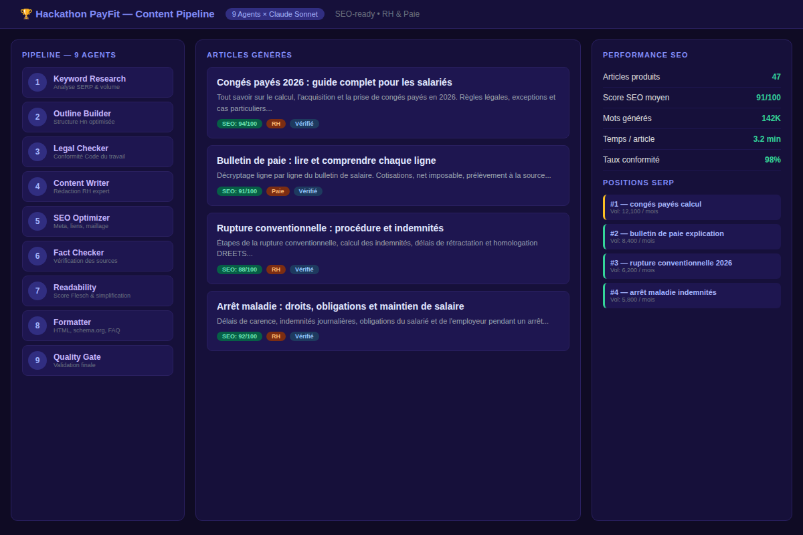
Pipeline de 9 agents IA sur Dust pour générer des articles RH & Paie SEO-ready et légalement conformes à grande échelle.
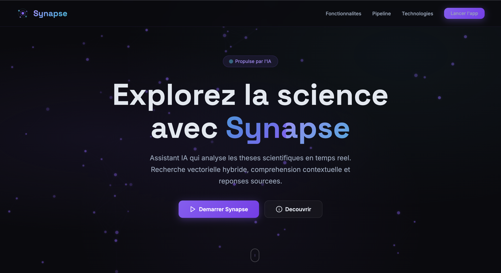
Chatbot RAG connecté à thèses.fr — recherche sémantique par embeddings sur un corpus académique de milliers de thèses.
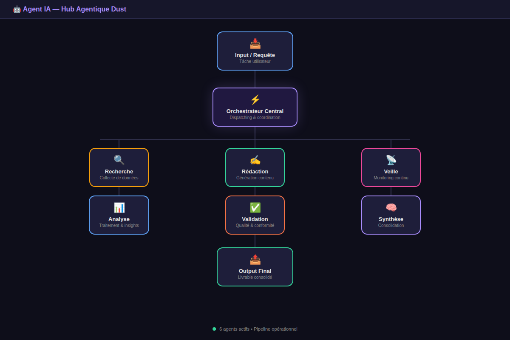
Architecture multi-agents sur Dust — agents spécialisés qui se passent du contexte et collaborent autour d'une tâche centrale.
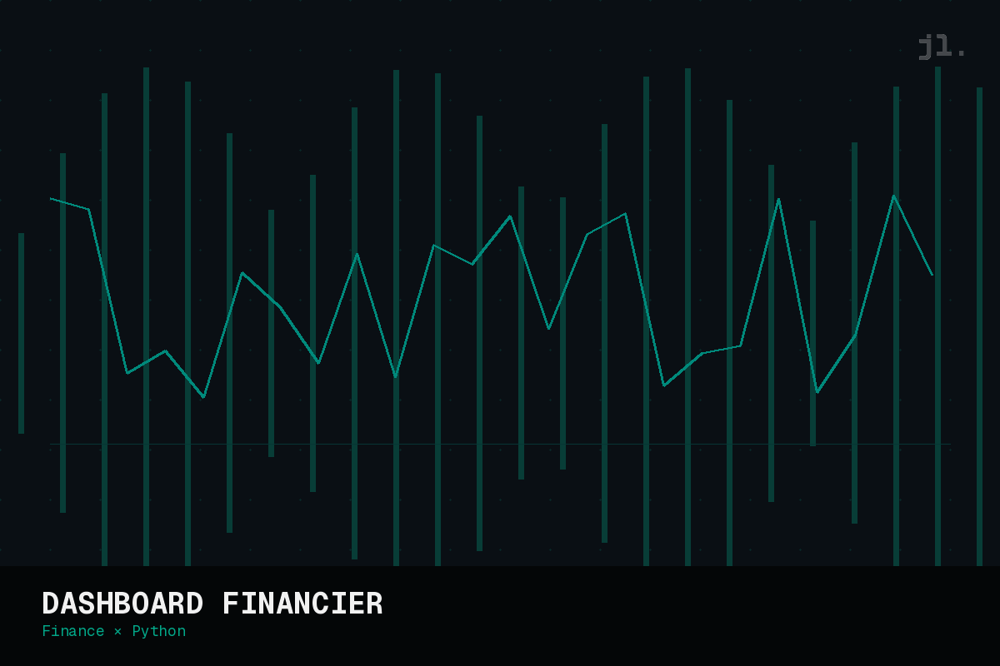
Portefeuille financier automatisé via Google Sheets & Apps Script pour tracker ses performances et viser mieux que le S&P500.
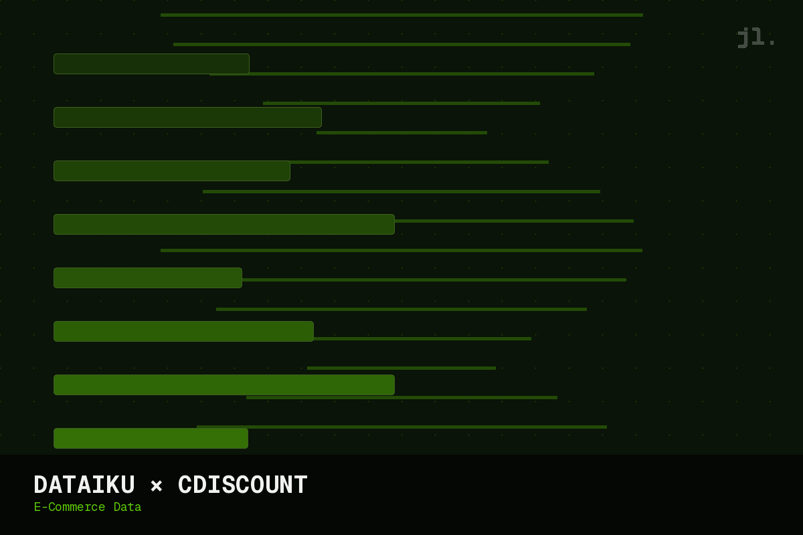
Pipeline data complet sur Dataiku — exploration, modélisation et restitution d'insights e-commerce sur les données Cdiscount.
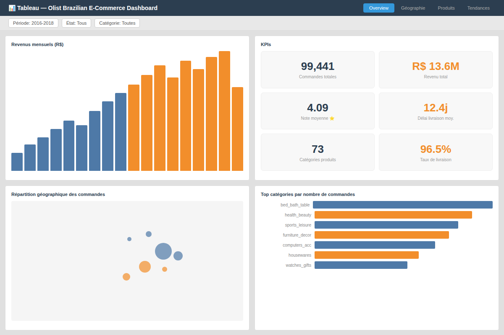
Dashboard interactif en 8 vues sur Tableau Desktop — 99 441 commandes e-commerce brésiliennes analysées, avec cartes, séries temporelles et filtres liés.
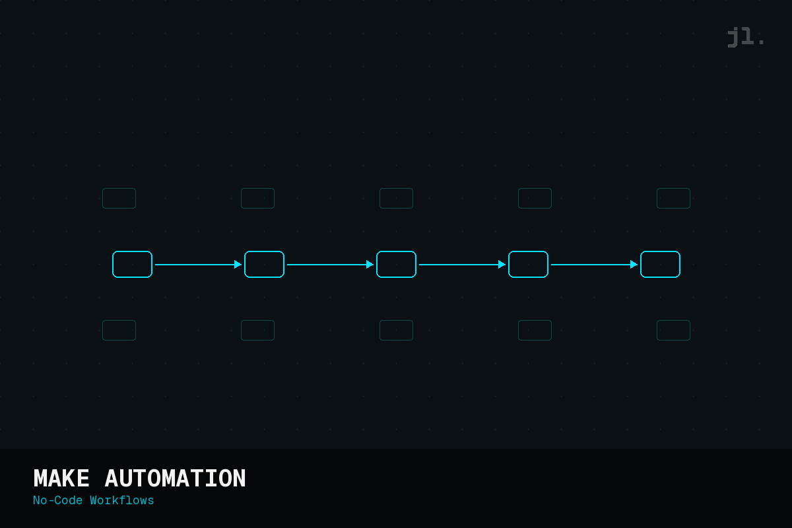
Workflows no-code sur Make pour connecter des apps, automatiser des tâches répétitives et gérer des flux de données sans code.
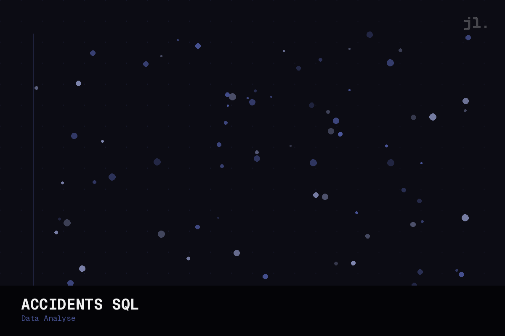
Analyse SQL des accidents routiers en France via data.gouv.fr — dashboard interactif déployé et recommandations structurées.
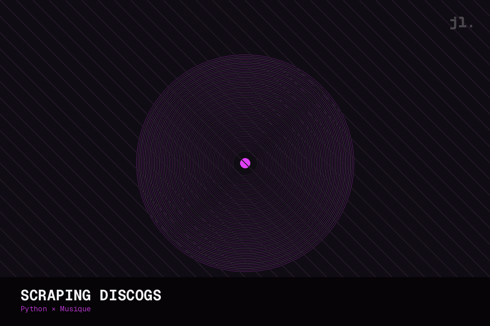
Scraping Python de Discogs pour analyser la corrélation entre format vinyle, rareté et valeur sur le marché secondaire.
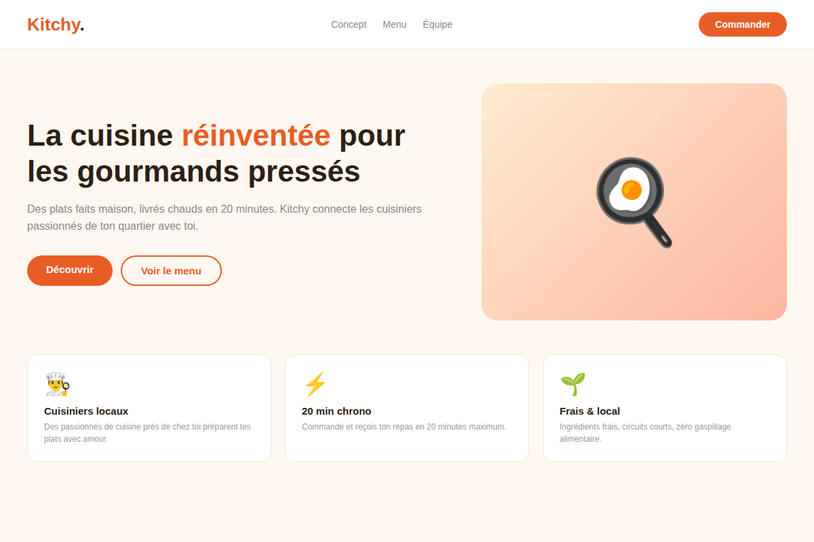
Concept startup imaginé, prototypé et pitché — de l'idée brute au deck devant jury.
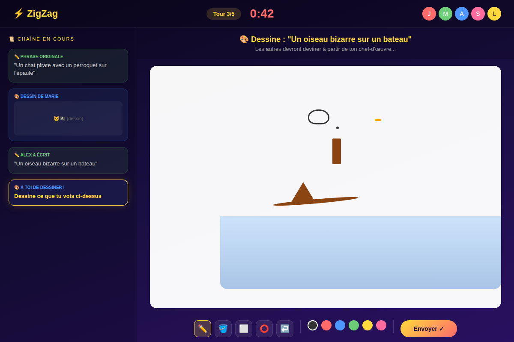
Un jeu multijoueur en ligne créé avec des amis, de zéro — conception, développement, mise en ligne. Le projet qui a tout déclenché.